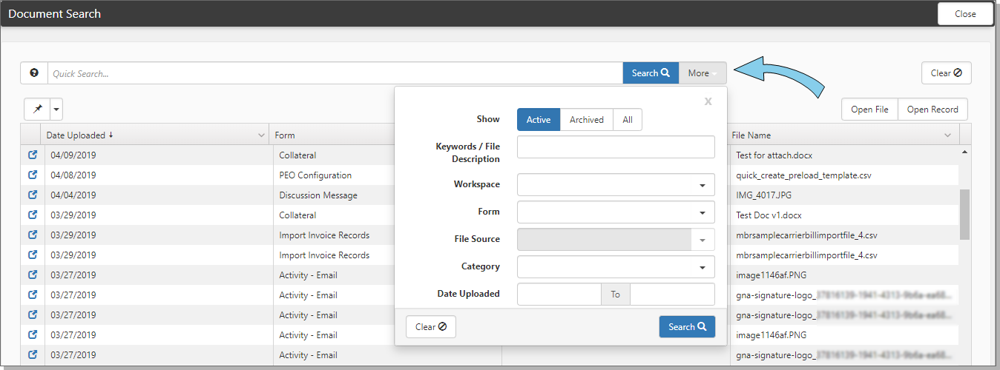

The Document Search module allows you to find documents across the system using filtered searches. This module uses dtSearch, a retrieval and full text search engine to search large numbers of system records efficiently, returning the results quickly.
To use Document Search:
From the modules bar, select Document Search. You may have to click View to see the overflow list.
The Document Search dashboard opens.

Use More Search to filter the list.
| Parameter | What it does |
|---|---|
| Show | Options, Active. Inactive, or All. This refers to the record IsActive flag |
| Keywords / File Description |
Searches File description for matching text using a LIKE search. Searches in these areas: File Category File Name File Category File Metatags Organization Name Workspace Name Entity Type (Dataform Name or Task or Organization or Contact or Activity Default Attribute for Entity Type (such as Case # or Task #) Fields with the Index this Field box checked. Searches actual DB Values, not decoded. |
| Workspace | Filters for selected Workspace |
| Form | Select a dataform or an Organization, Contact, Activity, Task |
| File Source | Enabled when a dataform is selected. Choose the paperclip or a upload field on that dataform |
| Category |
Filters for files of the selected Category. |
| Date Uploaded | Filters for documents uploaded between the selected dates. |
Document search provides access to workspace documents where the logged in user is in the Workspace Users list. Documents in Workspaces to which the user does not have access are not displayed.
|
Open File |
Download the file for viewing. |
|
Open Record |
Opens the record containing the file. Double-clicking the row does the same. |
Populate the name of the dataform on the Filter Value for the Lookup and that category would be limited to just that dataform. Leaving the filter value blank would allow the category to be available from all forms.
|
Document Index - Rebuild |
Deletes and re-creates the indexes on the following tables: Orgs, Contacts, Tasks, Org Activities and Dataforms (file upload fields and paperclips). Optimizes file searches. |
|
Document Index - Update |
Updates the indexes on the following tables: Orgs, Contacts, Tasks, Org Activities and Dataforms (file upload fields and paperclips). Optimizes file searches. |
These processes make attached files easier to find in the system by either refreshing or removing and re-creating the indexes that point to those files. These indexes are rebuilt/refreshed for:
Indexes generally contain the items of data on the file that we use to link to or search for the file - like an index in a book so that the searches are optimized.
Using a * search option is more forgiving and can yield better search results. The * is used to match any number of characters. It is similar to the % (contains) search option. A % search with dtSearch performs differently, ignoring any records where the string before the wildcard does not stand alone:
| Search String | Returned Results |
|---|---|
| Business% | Business File For Test.doc |
| Business* | Business File For Test.doc, BusinessRuleError.jpg |
Keyword search is any sequence of text, like a sentence or a question.
In keyword searches:
Use quotation marks around phrases.
Use + in front of any word or phrase that is required.
Use – in front of a word or phrase to exclude it.
Examples:
banana pear "apple pie"
"apple pie" –salad +"ice cream"
A Boolean search request consists of a group of words or phrases linked by connectors such as and and or that indicate the relationship between them.
Examples:
apple and pear - Both words must be present
apple or pear - Either word can be present
apple and not pear - Only apple must be present
If you use more than one connector, use parentheses to indicate precisely what you want to search for. For example, apple and pear or orange juice could mean (apple and pear) or orange, or it could mean apple and (pear or orange).
| Use | Example |
|---|---|
|
Use a ? to match any single character. |
appl? matches apply or apple |
|
Use a * to match any number of characters. |
appl* matches application |
|
Use a ~ to extend a search to cover grammatical variations on a word. |
apply~ matches apply, applies, applied |
|
Use a % to find a word even if it is misspelled. |
ba%nana matches banana, bananna |
|
Use # to look for a word that sounds like the word you are searching for and begins with the same letter. |
#smith matches smith, smythe |
|
Use & to find synonyms of a word in a search request. |
fast& matches quick |
|
Use the AND connector in a search request to connect two expressions, both of which must be found in any document retrieved. |
apple pie and poached pear would retrieve any document that contained both phrases |
|
Use the OR connector in a search request to connect two expressions, at least one of which must be found in any document retrieved. |
apple pie or poached pear would retrieve any document that contained apple pie, poached pear, or both |
|
Use NOT in front of any search expression to reverse its meaning. This allows you to exclude documents from a search. |
apple sauce and not pear |